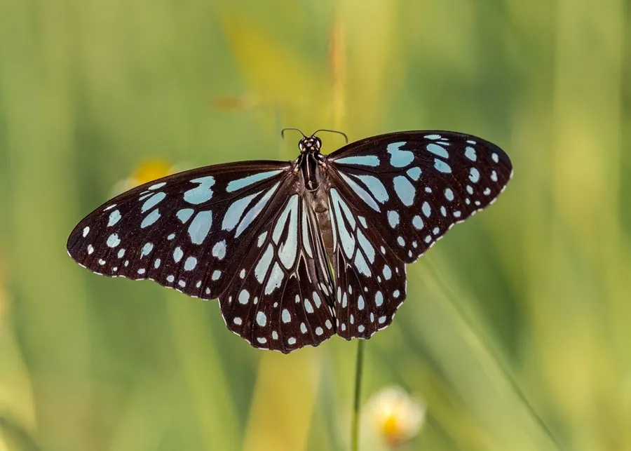

昆虫 · 动物界
青斑蝶 Tirumala limniace

青黑色翅面点缀半透明青蓝色斑纹的常见斑蝶，幼虫取食萝藦科植物，中国南方常见，冬季会成群越冬。
- 分类
- 门节肢动物门纲昆虫纲目鳞翅目科蛱蝶科属斑蝶属
- 栖息环境
- 林缘、灌丛、草地与山谷，萝藦科植物附近
- 地理分布
- 中国南方、东南亚和南亚地区
- 保护级别
- 暂无评估
物种志
青斑蝶翅展约 7–8 cm，翅面黑褐色，上面分布着许多青蓝色或半透明的斑纹，像玻璃一样透亮，因此得名；后翅中央常有深色斑块，边缘点缀白点。雌雄花纹相似，雌蝶体型稍大。
它生活在林缘、灌丛、草地和花园，成虫飞行缓慢，喜欢访花吸蜜。雌蝶把卵产在萝藦科植物上，幼虫取食叶片并储存毒素，成虫因此对鸟类有毒。青斑蝶在中国南方、东南亚和南亚分布广泛，秋季常成群向南迁飞，在温暖的山谷中集体越冬，越冬群有时包含多个斑蝶种类，是南方著名的生态景观。它的蛹为绿色，带有金属光泽的斑纹，挂在寄主植物上，羽化时蛹壳会裂开，成虫爬出后展翅。它的寿命约一个月。
形态与习性
- 食性幼虫取食萝藦科植物；成虫吸食花蜜
- 翅展约 7–8 cm
- 识别黑褐色翅面点缀青蓝色半透明斑纹
- 习性秋季成群南迁，在温暖山谷集体越冬
- 分布中国南方、东南亚和南亚
趣味知识
- 青斑蝶的斑纹呈青蓝色，透光时像玻璃一样清亮。
- 秋天它们会成群南迁，在山谷里聚成越冬群。
- 幼虫取食萝藦科植物，把毒素储存在体内防身。